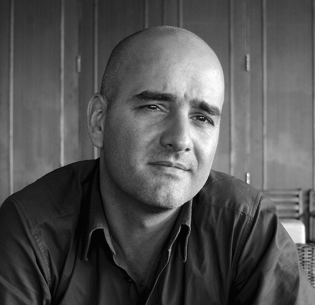

Après avoir travaillé un peu plus de 10 ans au sein de grands groupes et de start-ups, je pars faire un long voyage autour du monde pendant près de deux ans. Je rentre alors en France avec quelques milliers de photos, plus ou moins réussies, et la conviction que ma voie est là : écrire, raconter, témoigner avec des images et des mots. Je commence alors en 2014 par apprendre à coder au sein du Dev Bootcamp Le Wagon, puis je perfectionne ma technique photographique aux Gobelins, l'école de l'image, en 2014/2015. Et enfin, je décide de suivre en 2015/2016 le cursus photojournalisme au sein de l'EMI CFD.
Contact :
+33(0)6.95.51.46.79